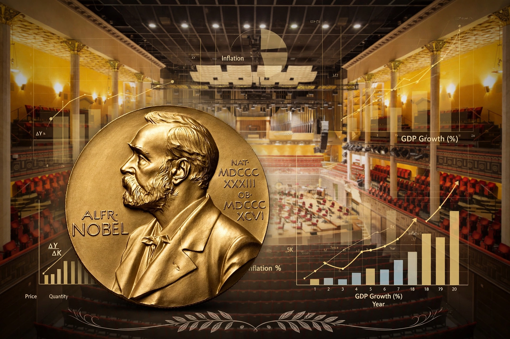

First awarded 1969 to Ragnar Frisch and Jan Tinbergen.
The Nobel Memorial Prize in Economic Sciences, officially the Sveriges Riksbank Prize in Economic Sciences in Memory of Alfred Nobel, has been awarded annually since 1969 by the Royal Swedish Academy of Sciences.
| Year | Laureate(s) | Contribution |
|---|---|---|
| 1969 | Ragnar Frisch, Jan Tinbergen | Econometric models |
| 1970 | Paul Samuelson | Scientific analysis in economics |
| 1976 | Milton Friedman | Consumption analysis, monetary history |
| 1990 | Harry Markowitz, Merton Miller, William Sharpe | Financial economics |
| 1994 | John Nash, John Harsanyi, Reinhard Selten | Game theory |
| 1998 | Amartya Sen | Welfare economics |
| 2002 | Daniel Kahneman, Vernon Smith | Behavioural / experimental economics |
| 2009 | Elinor Ostrom, Oliver Williamson | Economic governance |
| 2013 | Eugene Fama, Lars Peter Hansen, Robert Shiller | Asset prices |
| 2019 | Abhijit Banerjee, Esther Duflo, Michael Kremer | Experimental approach to poverty |
| 2021 | David Card; Joshua Angrist, Guido Imbens | Labour economics, causal inference |
| 2023 | Claudia Goldin | Women's labour market outcomes |
| 2024 | Daron Acemoglu, Simon Johnson, James Robinson | Institutions and prosperity |
Other laureates include Friedrich Hayek (1974), James Tobin (1981), Robert Lucas (1995), Paul Krugman (2008), and Richard Thaler (2017). See Nobel Memorial Prize in Economic Sciences.